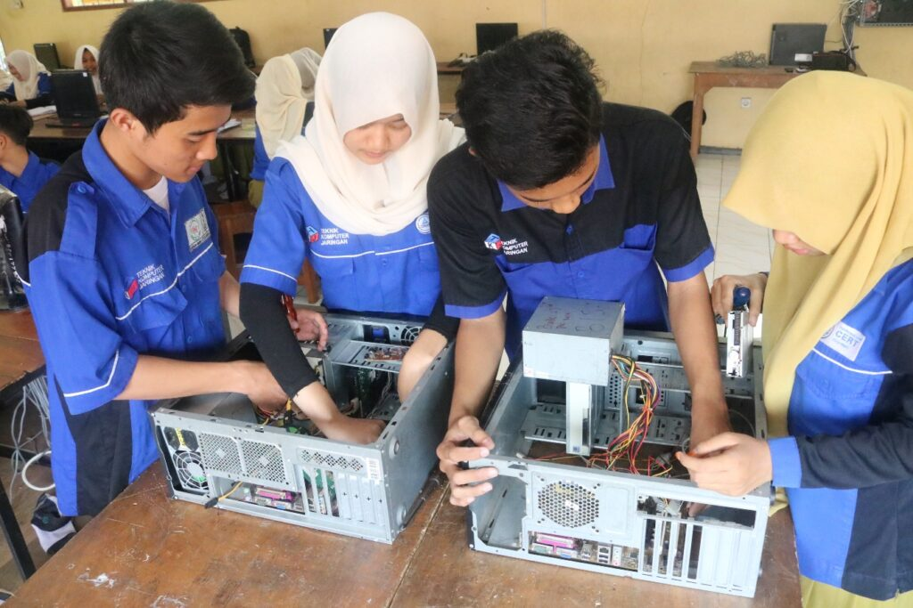

Selamat Datang di TKJ SMKN 1 Luwu Utara
Mencetak tenaga profesional dalam bidang komputer dan jaringan
Selengkapnya
Mencetak tenaga profesional dalam bidang komputer dan jaringan
SelengkapnyaTeknik Komputer dan Jaringan (TKJ) adalah program unggulan yang melatih siswa di bidang teknologi informasi dan jaringan komputer. Program ini memberikan keterampilan teknis dan teoritis untuk mempersiapkan siswa dalam dunia kerja.
Mengajarkan siswa untuk menginstal dan mengonfigurasi jaringan lokal (LAN), wireless, dan jaringan berbasis cloud. Siswa juga dilatih menggunakan perangkat jaringan seperti router, switch, dan access point.
Pelatihan mendalam tentang keamanan jaringan, firewall, dan VPN untuk melindungi data serta mencegah serangan siber. Lulusan diharapkan memahami konsep dasar dan implementasi keamanan jaringan.
Mempelajari manajemen server dengan berbagai sistem operasi seperti Windows Server dan Linux. Siswa diajarkan membuat server web, server database, dan file server.
Siswa mendapatkan dasar-dasar pemrograman, yang bermanfaat dalam pengembangan perangkat lunak dan aplikasi jaringan. Pelajaran meliputi pemrograman jaringan dan pengelolaan basis data.
Pelatihan untuk mengelola proyek berbasis teknologi informasi. Siswa dilatih dalam manajemen waktu, pengelolaan anggaran, dan koordinasi tim untuk proyek jaringan dan IT lainnya.